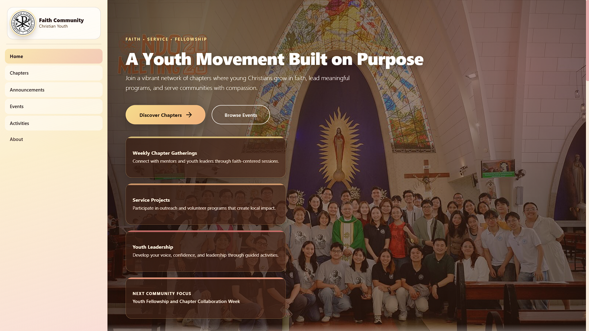

Frontend development
Responsive interfaces with React, JavaScript, HTML, and CSS.
Full-stack developer · Davao City, Philippines
I’m Justin, an Information Technology graduate focused on full-stack web development, thoughtful interfaces, and connected systems. I turn practical problems into products that are useful, maintainable, and easy to understand.

01 / About
My work sits between product thinking and implementation. I enjoy shaping an interface, connecting it to a dependable backend, and working through the details that make the final experience feel complete.
Through academic, client-based, and internship projects, I’ve built responsive applications, authentication and role systems, content workflows, database-backed features, and embedded prototypes. I’m now looking for a team where I can contribute, learn quickly, and grow into a stronger software engineer.
Responsive interfaces with React, JavaScript, HTML, and CSS.
REST APIs, Node.js, Express, MySQL, JWT, and system integration.
ESP32, Arduino, sensors, GPS/GSM modules, and IoT prototyping.
Toolkit
Technologies & Tools02 / Selected work
A focused selection spanning freelance systems, full-stack development, embedded systems, and school projects.

A full-stack community platform for the Filipino-Chinese Catholic Youth, engineered to centralize member engagement, announcements, and events.
A multi-branch operations and reconciliation platform connecting POS, inventory, customer credit, daily closing, and reporting across 5 branches.
Private
A tablet-optimized motel management system for real front-desk operations, covering room turnover, stays, store sales, and financial reports.
Private

A content management and commerce system built for an institutional client, exploring custom WordPress architecture and multi-vendor directory capabilities.

An ESP32-based embedded safety system engineered for motorcycle helmets, combining motion sensing, GPS tracking, and cellular emergency alerts.

A user-centered mobile interface designed for farmers to monitor and control automated cacao drying chambers with live telemetry and drying presets.

A mobile application concept designed to bridge university students with verified campus jobs, student assistantships, and flexible local employer opportunities.
03 / Experience
Independent / Freelance
Designed, developed, tested, and deployed production software for local businesses, translating operational workflows into secure, responsive full-stack systems.
Clever Kobweb
Contributed across frontend, backend, and database layers of the FCCY community platform, working with React, Node.js, Express, MySQL, Axios, and JWT.
04 / Contact
I’m currently open to junior software development and full-stack opportunities. If my work looks relevant to your team, I’d be glad to hear from you.